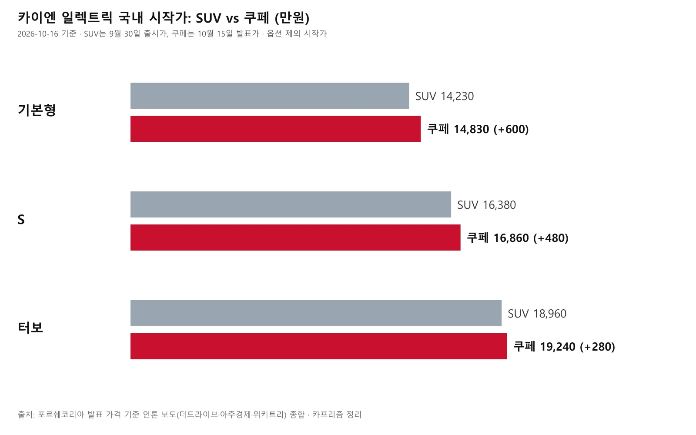
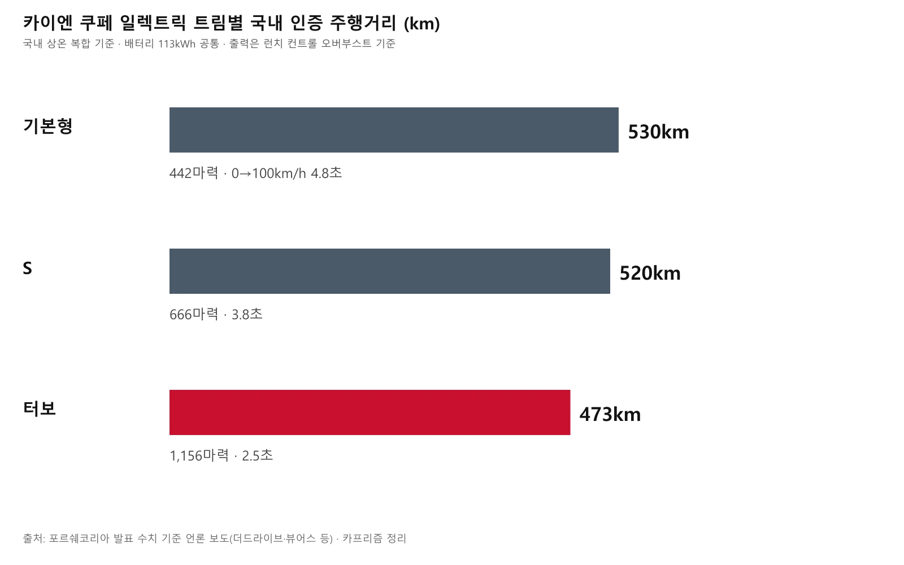
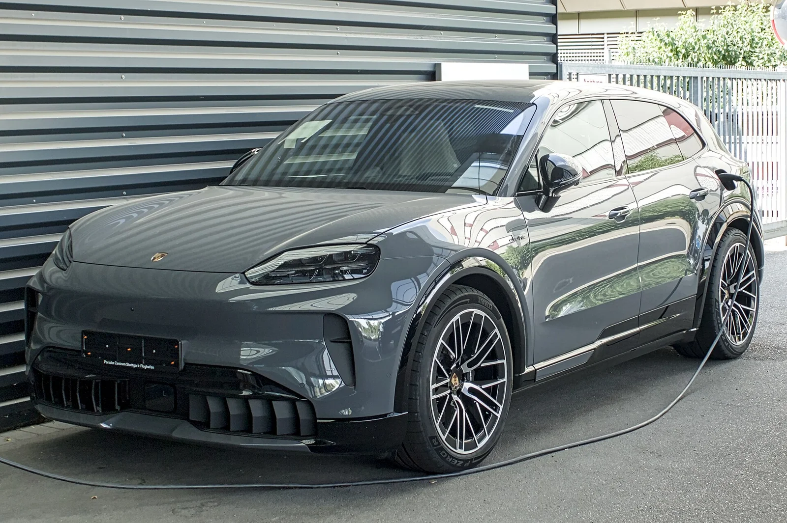
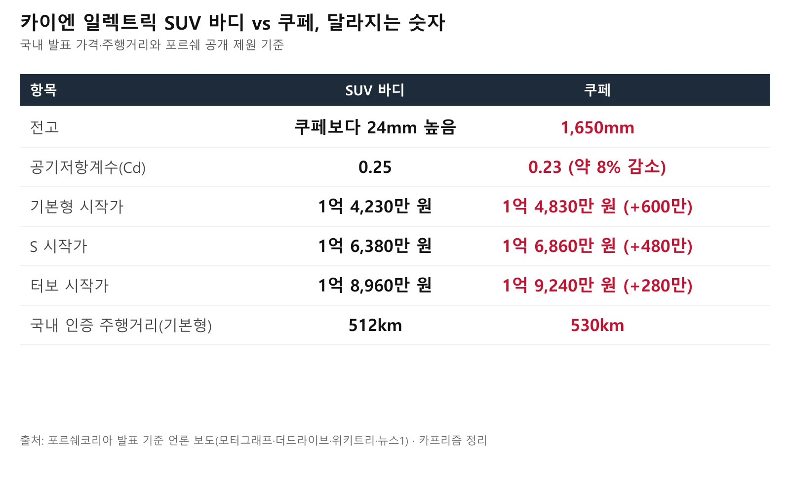
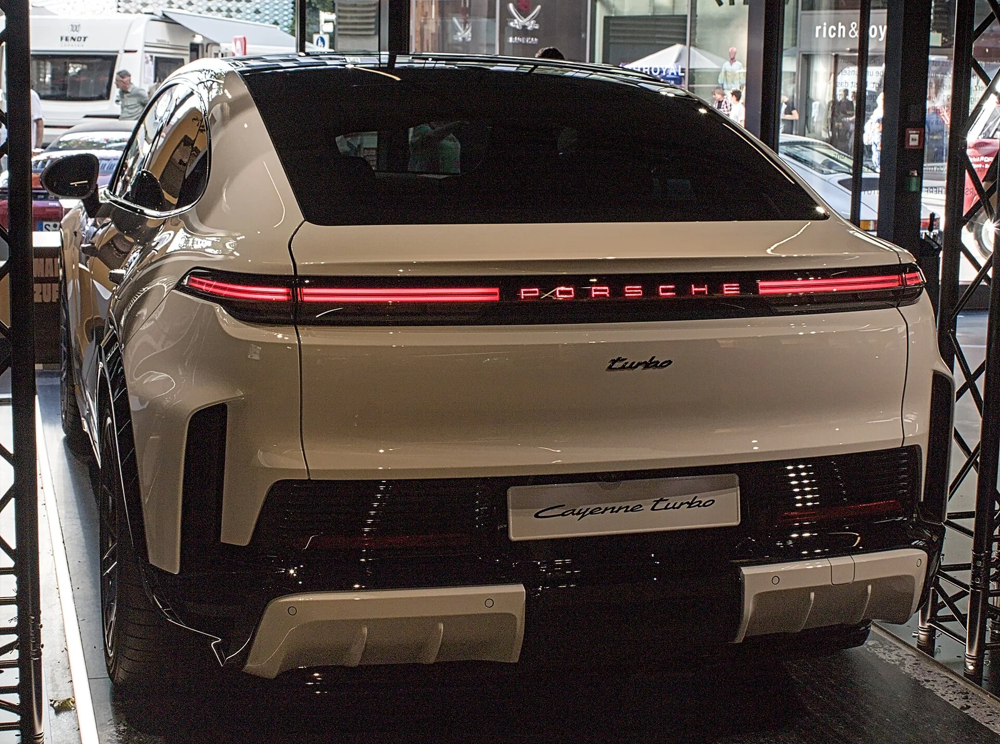
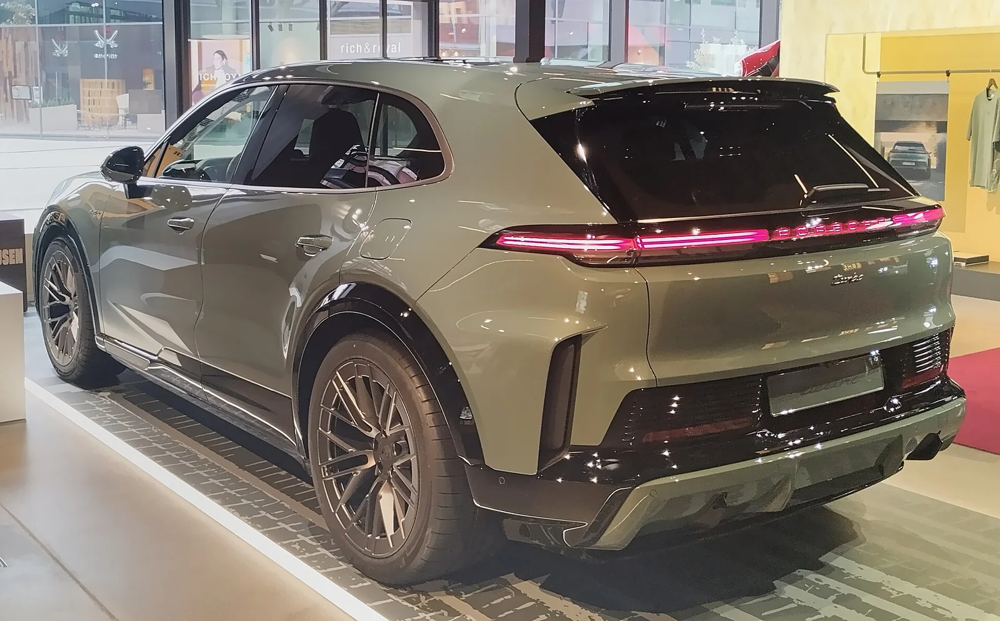
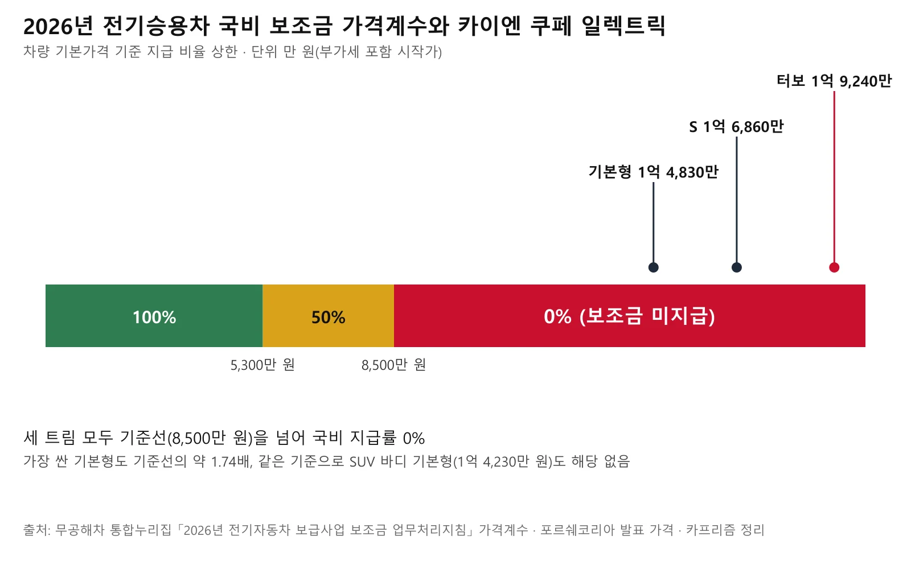
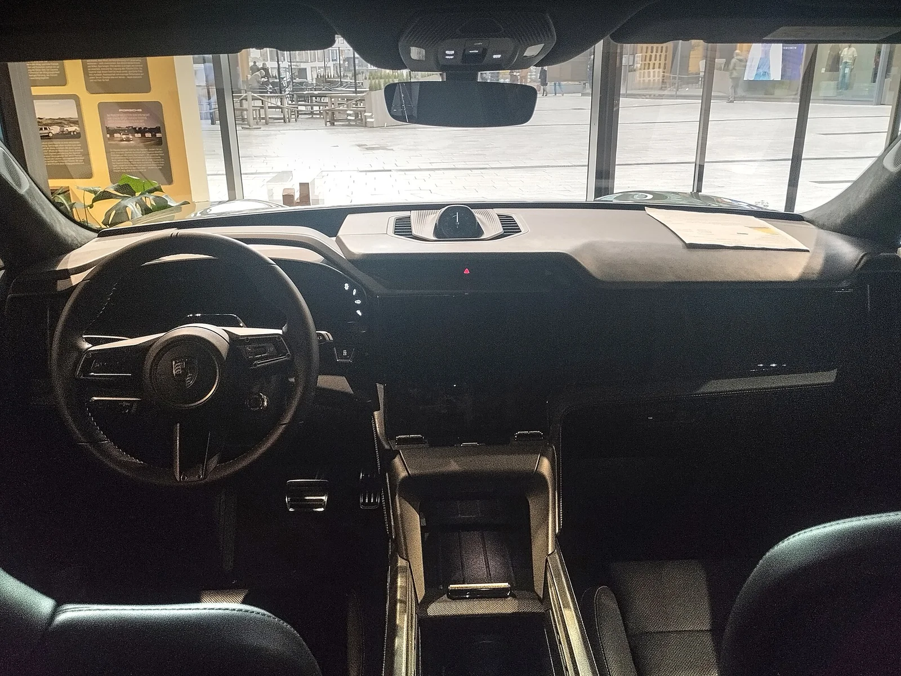
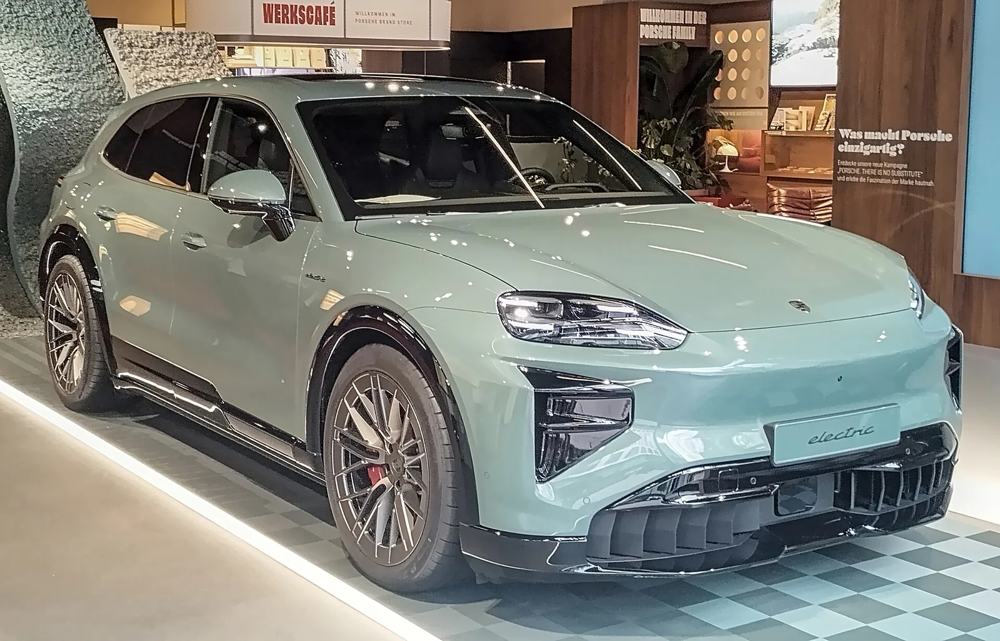

▲ 카이엔 터보 쿠페 일렉트릭 전시차의 전면. 루프가 완만하게 떨어지는 쿠페 실루엣이 SUV 모델과의 가장 큰 차이다 ⓒ Alexander-93, Wikimedia Commons (CC BY-SA 4.0)
"쿠페는 SUV보다 얼마나 더 비쌀까?" 답은 트림마다 다르다. 포르쉐코리아가 10월 15일 국내에 내놓은 카이엔 쿠페 일렉트릭의 시작가는 기본형 1억 4,830만 원, S 1억 6,860만 원, 터보 1억 9,240만 원이다. 같은 이름의 SUV 바디 모델보다 기본형은 600만 원, S는 480만 원, 터보는 280만 원 비싸다. 그리고 세 트림 모두 국비 구매보조금은 받을 수 없다.
이 글은 2026년 10월 16일 현재, 모터그래프·지피코리아·오토헤럴드·더드라이브 등이 전한 포르쉐코리아 발표 내용과 정부의 2026년 전기차 보조금 지침을 교차 확인해 정리했다. 가격은 모두 옵션을 뺀 시작가(부가세 포함) 기준이다. 포르쉐코리아의 공식 가격 페이지(2027년형 표기)에서도 세 트림의 권장소비자가격이 같은 금액으로 확인된다. 쿠페형은 10월 2일 서울 마포구 문화비축기지의 팬 페스티벌 '포르쉐 바이브 서울'에서 국내 처음 공개됐고, 최상위 터보부터 먼저 출시하고 S, 기본형이 순차적으로 뒤따르는 방식이다. 순차 출시와 고객 인도의 구체적 날짜는 발표에 나와 있지 않다.
1. 트림별 가격과 성능 — 터보가 가장 먼저 들어온다
쿠페 일렉트릭은 기본형·S·터보 세 갈래로 나뉜다. 모터그래프와 오토헤럴드 보도에 따르면 포르쉐코리아는 최상위 터보를 시작으로 S, 기본형을 순차적으로 선보이는 계획이다. 아래 출력과 가속 수치는 모두 런치 컨트롤을 쓴 오버부스트 기준이다.
| 구분 | 기본형 | S | 터보 |
|---|---|---|---|
| 시작가(부가세 포함) | 1억 4,830만 원 | 1억 6,860만 원 | 1억 9,240만 원 |
| 최고출력(오버부스트) | 442마력 | 666마력 | 1,156마력 |
| 0→100km/h | 4.8초 | 3.8초 | 2.5초 |
| 최고속도 | 230km/h | 250km/h | 260km/h |
| 출시 순서 | 순차 투입(3번째) | 순차 투입(2번째) | 가장 먼저 |
세 트림이 같은 113kWh 배터리를 쓰기 때문에 가격 차이는 사실상 모터 출력과 성능 장비에서 나온다. 기본형과 터보의 가격 차는 4,410만 원, 출력 차는 700마력 넘게 벌어진다. 포르쉐코리아 공식 페이지 기준 최고출력은 기본형 325kW, S 490kW, 터보 850kW이며, 앞뒤 두 개의 영구자석 동기식 모터를 쓴다. 한편 바디 규격은 트림과 무관하게 같다. 전장 4,985mm, 전폭 1,980mm(사이드미러 제외), 전고 1,650mm이며, 공기저항계수(Cd)는 0.23이다.

▲ SUV 바디(9월 30일 출시)와 쿠페(10월 15일 발표)의 트림별 시작가 비교. 단위는 만 원 ⓒ 카프리즘 (수치 출처: 포르쉐코리아 발표 기준 언론 보도)
2. 배터리·주행거리·충전 — 한국 인증은 473~530km
세 트림 모두 113kWh 배터리를 쓰고, 국내 인증 기준 1회 충전 주행거리는 기본형 530km, S 520km, 터보 473km다. 더드라이브가 트림별로 이 수치를 정리했고, 뷰어스는 '국내 상온 복합 기준'이라고 밝혔으며 아주경제도 터보 473km를 같은 수치로 전했다. 다만 환경부(현 기후에너지환경부) 인증서 원문과 무공해차 통합누리집의 인증 조회 결과는 이번 취재에서 직접 확인하지 못했으므로, 수치 자체는 복수 매체가 일치해 전하는 발표 내용으로 이해하면 된다. 참고로 같은 이름의 SUV 바디는 국내 상온 복합 기준 512·517·468km로 발표됐고, 해외 WLTP 기준 수치는 인증 방식이 달라 직접 비교할 수 없다.
| 항목 | 내용 |
|---|---|
| 배터리 용량 | 113kWh (전 트림 공통) |
| 1회 충전 주행거리(국내 인증) | 기본형 530km · S 520km · 터보 473km |
| 전기 시스템 | 800V |
| DC 급속충전 | 최대 390kW, 특정 충전 환경에서는 최대 400kW / 최적 조건에서 10→80% 16분 이내 |
| AC 완속충전 | 기본 11kW, 22kW 온보드 충전기는 선택 사양 (11kW 무선 홈 충전 옵션은 공식 페이지에 2027년 출시 예정으로 표기) |
| 견인 능력 | 최대 3.5톤(오프로드 패키지 선택 시), 기본은 3.0톤 |
| 고전압 배터리 보증 | 재료·제조 결함 기준 8년 또는 16만km 중 먼저 도래하는 쪽(포르쉐코리아 공식 페이지) |

▲ 쿠페 일렉트릭 트림별 국내 인증 주행거리와 출력·가속 성능 ⓒ 카프리즘 (수치 출처: 포르쉐코리아 발표 기준 언론 보도)
흥미로운 점은 가장 빠른 터보가 주행거리는 가장 짧다는 것이다. 장거리를 자주 달린다면 가속 숫자보다 이 수치를 먼저 보는 편이 합리적이다. 충전 속도 수치는 모두 최적 조건(충전기 출력, 배터리 온도 등) 기준이라 겨울철이나 출력이 낮은 충전기에서는 이보다 길어질 수 있다. 400kW급 충전은 국내에서도 그만한 출력의 초급속 충전기가 있어야 의미가 있으므로, 자주 이용할 충전소의 최대 출력을 먼저 확인해 두는 편이 낫다.

▲ 충전 케이블이 연결된 카이엔 일렉트릭(SUV 바디, 독일 촬영). 쿠페도 같은 800V 충전 시스템을 쓴다 ⓒ Alexander Migl, Wikimedia Commons (CC BY-SA 4.0)
3. 카이엔 일렉트릭(SUV)과 어디가 다른가
파워트레인과 배터리는 같고, 달라지는 건 지붕과 공기저항, 뒷좌석, 그리고 가격이다. 쿠페는 전고가 SUV 모델보다 24mm 낮은 1,650mm이고, 전장·전폭은 SUV와 같다. 지붕을 낮춘 만큼 공기저항계수는 0.23으로 줄었다(SUV 0.25 대비 약 8% 감소). 포르쉐 발표에 따르면 지붕선은 911의 뒤로 떨어지는 '플라이라인'에서 영감을 받았고, 프레임리스 도어가 적용됐다. 공기 흐름은 거의 완전히 밀폐된 언더보디, 에어 커튼, 가변식 냉각 공기 플랩, 어댑티브 리어 스포일러로 다듬었고, 터보에는 액티브 에어로 블레이드가 더해진다. 모터그래프 보도에 따르면 쿠페 일렉트릭에는 파노라마 글래스 루프와 스포츠 크로노 패키지가 기본으로 들어가고, 옵션으로 카본 루프와 22인치 휠을 묶은 쿠페 전용 경량 스포츠 패키지(최대 17.6kg 경량화)를 고를 수 있다.
| 트림 | SUV 시작가 | 쿠페 시작가 | 가격 차 | SUV 주행거리* | 쿠페 주행거리 |
|---|---|---|---|---|---|
| 기본형 | 1억 4,230만 원 | 1억 4,830만 원 | +600만 원 | 512km | 530km |
| S | 1억 6,380만 원 | 1억 6,860만 원 | +480만 원 | 517km | 520km |
| 터보 | 1억 8,960만 원 | 1억 9,240만 원 | +280만 원 | 468km | 473km |
* SUV 주행거리는 위키트리가 9월 30일 보도한 국내 상온 복합 수치로, 이번 취재에서는 이 매체 1건으로만 확인했다.
표대로라면 쿠페의 가격 프리미엄은 트림이 높을수록 줄어들고, 주행거리는 세 트림 모두 근소하게 길다. 뒷좌석은 2인 개별 시트 또는 2+1 구성 중 선택할 수 있다. 짐 공간은 국내 보도(오토헤럴드·지피코리아) 기준 기본 500ℓ에서 뒷좌석을 접으면 최대 1,313ℓ이고, 앞쪽 프런트 트렁크가 90ℓ다. 포르쉐코리아 공식 페이지에는 534ℓ, 최대 1,347ℓ로 적혀 있어 측정 기준에 따라 숫자가 다르므로 정확한 용량은 딜러 제원표로 확인하는 편이 좋다. SUV 바디와의 외관 차이는 아래 사진에서 확인할 수 있다.

▲ SUV 바디와 쿠페의 주요 수치 비교 ⓒ 카프리즘 (수치 출처: 포르쉐코리아 발표 기준 언론 보도)

▲ 카이엔 터보 쿠페 일렉트릭 후면. 좌우로 이어진 테일램프 아래로 낮게 떨어지는 테일게이트가 쿠페의 특징이다 ⓒ Alexander-93, Wikimedia Commons (CC BY-SA 4.0)

▲ 같은 카이엔 일렉트릭의 SUV 바디 후면. 쿠페와 달리 테일게이트가 더 곧게 서 있다 ⓒ Alexander-93, Wikimedia Commons (CC BY-SA 4.0)
📍 본지 기존 기사의 쿠페 가격과 다른 점
본지가 앞서 소개한 출시 전 쿠페 가격(기본형 1억 4,690만 원, S 1억 6,720만 원, 터보 1억 9,100만 원)은 이번 국내 발표 가격보다 트림마다 140만 원씩 낮았다. 이에 따라 쿠페가 SUV보다 460만 원 안팎 비싸다던 서술도 트림별 280~600만 원으로 바로잡았고, 최종 가격은 이 글에 정리한 1억 4,830만 원·1억 6,860만 원·1억 9,240만 원이다. SUV 바디 모델의 상세 제원과 글로벌 공개 내용은 카이엔 일렉트릭 글로벌 공개 기사에서 볼 수 있다.
4. 국비 보조금은 전 트림 대상 아님
2026년 전기승용차 보조금은 차량 기본가격이 5,300만 원 미만이면 100%, 5,300만 원 이상~8,500만 원 미만이면 50%, 8,500만 원 이상이면 0%만 지급한다. 정부가 무공해차 통합누리집에 공개한 「2026년 전기자동차 보급사업 보조금 업무처리지침」의 가격계수 규정이다. 쿠페 일렉트릭은 가장 싼 기본형 시작가(1억 4,830만 원)부터 기준선의 약 1.7배라 세 트림 모두 국비 보조금 지급률이 0%다. 보조금 업무처리지침 PDF 바로가기
같은 지침에서 지방자치단체는 차종별 국비 보조금 산정 수준에 비례해 지방비 보조금을 정하도록 되어 있어, 국비가 0이면 사실상 지자체 보조금도 기대하기 어렵다. 출고 3년 이상 된 내연기관차를 팔거나 폐차하고 전기차를 사는 개인에게 주는 전환지원금(국비 최대 100만 원)도 차종별 일반 국비 보조금에 비례해 0~500만 원 구간에서 산정하는 방식이라, 국비 보조금이 0인 이 차에서는 계산상 받을 금액이 없다. 다만 지자체별 공고는 따로 확인하는 편이 안전하다. 이 지침 기준은 2026년도 사업에 해당한다. 실제 부담 가격은 시작가에 옵션과 개별소비세 등 세금, 등록 비용이 더해지므로, 실구매가는 딜러 견적으로 확인해야 한다.

▲ 보조금 가격계수 구간과 카이엔 쿠페 일렉트릭 트림별 시작가 위치 ⓒ 카프리즘 (수치 출처: 무공해차 통합누리집 보조금 업무처리지침)

▲ 카이엔 터보 일렉트릭(SUV 바디) 전시차의 실내. 쿠페 실내 사진이 아니라 같은 카이엔 일렉트릭 계열의 대시보드 구성을 보여주는 참고 사진이다 ⓒ Alexander-93, Wikimedia Commons (CC BY-SA 4.0)
모터그래프 보도에 따르면 쿠페 일렉트릭에는 풀 디지털 계기판과 플로우 디스플레이, 옵션인 증강현실 헤드업 디스플레이 등 디지털 인터페이스가 적용된다. 섀시는 어댑티브 에어 서스펜션(PASM)과 최대 5도의 리어 액슬 스티어링이 기본이며, S와 터보는 포르쉐 액티브 라이드를 옵션으로 선택할 수 있다.
5. 누구와 비교할까 — 제네시스 GV90은 아직 가격표가 없다
1억 원대 중후반의 전동화 SUV를 고민한다면 비교 대상은 크게 두 갈래다. 하나는 같은 포르쉐 안의 SUV 바디(실내 공간과 가격 우선), 다른 하나는 아직 국내 가격이 정해지지 않은 대형 전기 SUV다. 본지 9월 25일 기사에서 다룬 제네시스 GV90은 123.5kWh 배터리와 3열 공간을 앞세운 플래그십이며, 해당 기사 작성 시점에는 국내 판매 가격이 공개되지 않았다. 10월 16일 현재 공식 가격은 확인하지 못했다. 가격이 나오기 전까지는 두 차를 같은 선상에서 비교하기 어렵다. GV90 vs 카이엔 일렉트릭 비교 기사에서 스펙 차이를 볼 수 있다.

▲ 카이엔 일렉트릭 SUV 바디의 전면. 전면 디자인은 쿠페와 비슷하고 루프라인에서 갈린다 ⓒ Alexander-93, Wikimedia Commons (CC BY-SA 4.0)
✅ 구매 전 체크포인트
· 가격은 옵션 제외 시작가다. 개별소비세 등 세금과 옵션이 더해지면 달라진다
· 쿠페는 터보가 먼저, S·기본형은 순차 출시라 원하는 트림의 인도 시기를 딜러에 확인해야 한다
· 주행거리 473~530km는 상온 복합 기준이다. 겨울철 저온 주행거리 수치는 이번 발표에서 확인하지 못했다
· 국비 보조금은 없으므로 금융 조건과 지자체 공고를 따로 비교하자
카이엔 쿠페 일렉트릭의 국내 첫 공개 일정은 포르쉐 바이브 서울 예고 기사에서 다뤘다. 공식 가격표와 트림 정보는 포르쉐코리아 누리집에서 확인할 수 있다. 포르쉐코리아 카이엔 바로가기
6. 요약
포르쉐코리아가 카이엔 쿠페 일렉트릭을 국내에 출시했다. 시작가는 기본형 1억 4,830만 원, S 1억 6,860만 원, 터보 1억 9,240만 원이며, 최상위 터보를 먼저 들이고 S·기본형이 순차적으로 이어진다. 출력은 442마력·666마력·1,156마력(오버부스트), 국내 인증 주행거리는 530km·520km·473km다.
SUV 바디보다 가격은 280~600만 원 비싸고, 세 트림 모두 차량 가격이 8,500만 원을 넘어 2026년 기준 국비 보조금(지급률 0%)을 받을 수 없다. 이 글의 가격은 포르쉐코리아 공식 가격 페이지와 복수 매체 보도로 교차 확인했고, 성능·주행거리는 2026년 10월 16일 현재 포르쉐코리아 발표를 전한 복수 매체 보도 기준이다. 환경부(기후에너지환경부) 인증서 원문과 포르쉐코리아 보도자료 원문은 직접 열람하지 못했다.